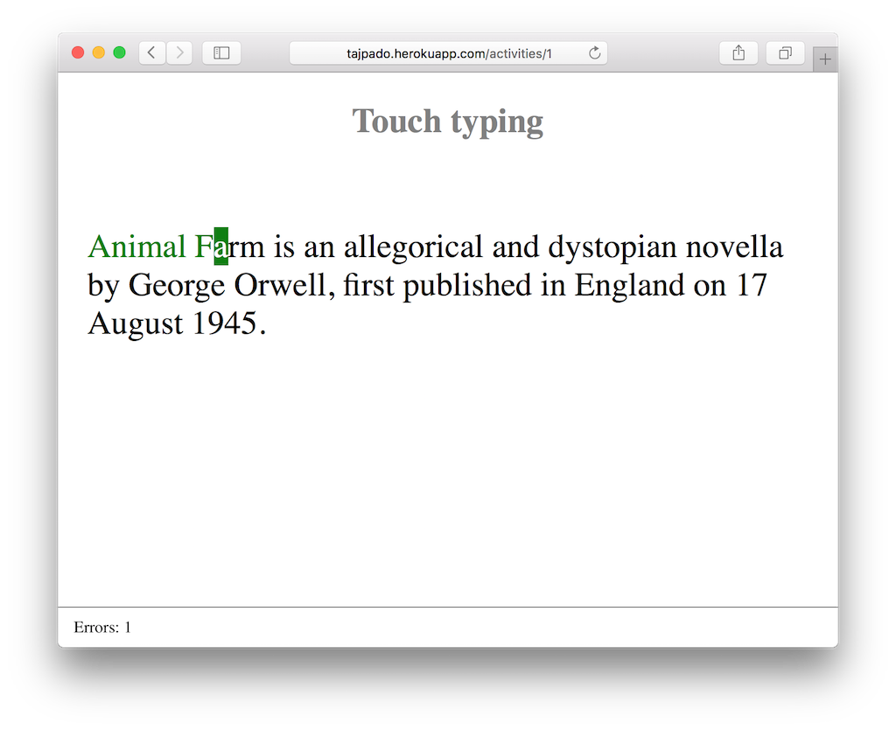

Febrero de 2016
- Fecha: 11 de febrero de 2016
- Hora: de 19:30 a 22:00
- Participantes: 9

Actividades
Tajpado
Santiago nos mostró una aplicación para dactilografía construida con Ember. Vimos la arquitectura de la aplicación, como se testeó y algunas funcionalidades interesantes desde el punto de vista de la implementación.
Recursos
Participantes
- Adrián Mugnolo (@xymbol)
- Braulio Martinez (@brauliomartinezlm)
- Fabian Rodriguez (@fabianrbz)
- Gustavo Villa (@gfvcastro)
- Julio Barrios (@jubar)
- Luis Ferreira (@hidnasio)
- Nicolás Barrera (@drummerhead)
- Sandino Saso (@sandinosaso)
- Santiago Ferreira (@san650)
Agradecimiento
Agradecemos a WyeWorks por brindarnos el lugar e invitarnos las bebidas, los snacks y la cena.